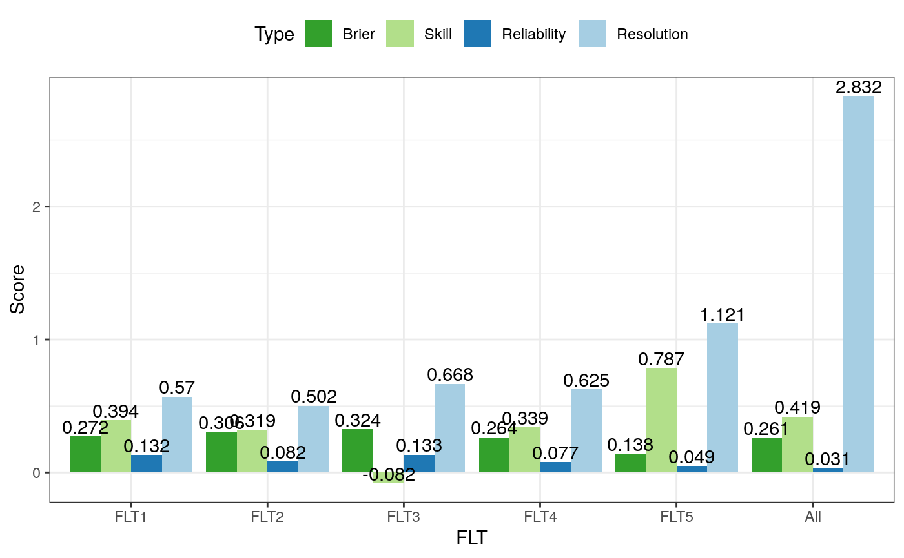

RAnEn::verifyBrier computes the Brier score and its decomposition for each all lead times available. This function used the NCAR verification package.
verifyBrier(anen.ver, obs.ver, threshold, ensemble.func, ..., baseline = NULL)
| anen.ver | A 4-dimensional array for analogs. |
|---|---|
| obs.ver | A 3-dimensional array for observations. |
| threshold | The numeric threshold for computing the brier score.
Observation and baseline values larger than or equal to the threshold
will be converted to 1. Analog values will not be processed with this
threshold value because it is assumed that the ensemble function |
| ensemble.func | A function that takes a vector as input and then
converts the ensemble members (the 4th dimension of analogs) into a scalar.
This scalar is usually a probability within |
| ... | Extra parameters for the ensemble.func. |
| baseline | A 3-dimensional array for the baseline forecasts. |
# Create synthetic datasets from different distributions # with 10 stations, 2 test days, 5 lead times, and # 50 ensemble members. # anen.ver <- array(rnorm(5000), dim = c(10, 2, 5, 50)) obs.ver <- array(runif(100, min = -5, max = 5), dim = c(10, 2, 5)) baseline <- array(rgamma(100, shape = 1), dim = c(10, 2, 5)) # Set the threshold for observation and baseline. Values larger # than or equal to this value will be converted to 1, otherwise # to 0. # threshold <- 0.5 # This is the function that takes the ensemble value vector # as input and output a probability. For example, here I count # how many values in the member are larger than or equal to # the split value. You can define your own function to compute # a probability from the ensemble. # ensemble.func <- function(v, split) {return( length(which(v >= split)) / length(v) )} # Calculate the Brier score. # Don't forget to pass the additional threshold to your ensemble # function. Otherwise you will receive an error complaining # about a missing argument. # score <- verifyBrier(anen.ver, obs.ver, threshold, ensemble.func, split = threshold, baseline = baseline)#>#>#>#>#>#> #> #> #> #>#> #>#> #> #>#>#> #>#>#>#>#>#>#> #>#> #> #>#> #> #>#> #> #>#>#> #>#> #> #>print(score)#> bs ss reliability resol #> FLT1 0.2725 0.39444444 0.13250000 0.5700000 #> FLT2 0.3065 0.31888889 0.08233333 0.5016667 #> FLT3 0.3245 -0.08166667 0.13338889 0.6677778 #> FLT4 0.2645 0.33875000 0.07700000 0.6250000 #> FLT5 0.1385 0.78692308 0.04891667 1.1208333 #> All 0.2613 0.41933333 0.03145735 2.8315735if (all(c('ggplot2', 'reshape2') %in% installed.packages())) { # Use ggplot2 require(reshape2) require(ggplot2) # Unpivot the score table colnames(score) <- c('Brier', 'Skill', "Reliability", 'Resolution') melted <- melt(data = score) colnames(melted) <- c('FLT', 'Type', 'Value') # Generate ggplot ggplot(data = melted) + theme_bw() + geom_bar(mapping = aes(x = FLT, y = Value, group = Type, fill = Type), stat = 'identity', position = 'dodge') + scale_fill_brewer(palette = 'Paired', direction = -1) + geom_text(mapping = aes(x = FLT, y = Value, label = round(Value, digits = 3), group = Type), position = position_dodge(0.9), vjust = -0.2) + labs(y = 'Score') + theme(legend.position = 'top') } else { # Use the base graphics barplot(score[, 'bs'], ylab = 'Brier') }#>#>